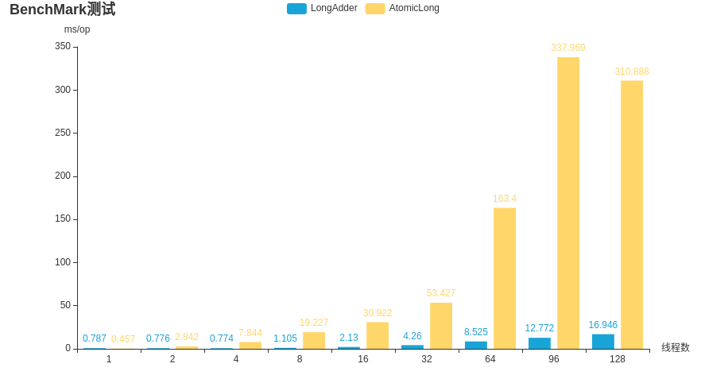

LongAdder 性能一定比 AtomicLong 好吗？某一天，小bin接到了组长的神秘任务…
前言
一天，组长找来小bin
组长：“小bin啊，最近我们服务器上的a模块出现几次异常，每次都是用户反馈了之后我们才去解决，领导们很重视这个问题，所以要求我们要在a模块上添加业务指标监控。这里你先去调研下 AtomicLong 和 LongAdder 性能差异吧，之后我们再一起看看怎么添加监控指标”
小bin：“这个我知道啊，多线程下 LongAdder 比 AtomicLong 性能好啊…”
说着在浏览器的搜索栏上输入 “LongAdder 和 AtomicLong 性能对比” ，打开了一个测试对比页面
组长：“我想让你做的是基于我们当前系统来做个对比，基于当前系统可能两者的性能差异不会特别明显，但是两者的使用方式还是有所区别的，这又涉及这次添加监控的工作量了”
组长：“你等会出份报告，下班前我再来找你”
小bin：“好的，保证完成任务”
源码简单分析
拿到了任务，先从何下手呢？小bin想了想，啪的一下，很快啊，打开了 LongAdder 和 AtomicLong 的源码。
想要做性能对比，也得先大概了解这两者的实现有什么区别吧
AtomicLong
AtomicLong 的实现比较简单，基本思路就是维护了一个 volatile 的 value 变量，累加时候通过自旋保证了数据增加的原子性。
当多个线程同时要进行数据操作时，就有可能增加自旋的时间。
// 使用volatile 保证可见性
private volatile long value;
public AtomicLong(long initialValue) {
value = initialValue;
}
public final long getAndIncrement() {
// 主要看 getAndAddLong 的实现
return unsafe.getAndAddLong(this, valueOffset, 1L);
}
// 通过自旋方式来保证原子性
// compareAndSwapLong 和 getLongVolatile 都是 native ，需要查看 jvm 源码
public final long getAndAddLong(Object var1, long var2, long var4) {
long var6;
do {
var6 = this.getLongVolatile(var1, var2);
} while(!this.compareAndSwapLong(var1, var2, var6, var6 + var4));
return var6;
}
public final native boolean compareAndSwapLong(Object var1, long var2, long var4, long var6);
public native long getLongVolatile(Object var1, long var2);LongAdder
LongAdder 就比 AtomicLong 复杂了点。 LongAdder 继承了 Striped64，Striped64 是在 java8 中添加用来支持累加器的并发组件，设计思路是在竞争激烈的时候尽量分散竞争。
LongAdder 核心思路是先使用cas操作base值，当发生碰撞后，若发生碰撞的线程对应的cells位置为null时，将添加的值放入cells数组对应位置中，若已经有数值了，则尝试cas该数值，若此处还是方式碰撞，则想办法将值添加到其他竞争不激烈的cells位置上。
public LongAdder() {
}
public void add(long x) {
Cell[] as; long b, v; int m; Cell a;
// 先尝试直接在base上加x
if ((as = cells) != null || !casBase(b = base, b + x)) {
boolean uncontended = true;
// 如果当前线程在 cells 对应槽位上已经有值，尝试在槽位值上加x；失败才执行 longAccumulate
if (as == null || (m = as.length - 1) < 0 ||
(a = as[getProbe() & m]) == null ||
!(uncontended = a.cas(v = a.value, v + x)))
longAccumulate(x, null, uncontended);
}
}
// sum 求和把base值和cells上的值加起来
public long sum() {
Cell[] as = cells; Cell a;
long sum = base;
if (as != null) {
for (int i = 0; i < as.length; ++i) {
if ((a = as[i]) != null)
sum += a.value;
}
}
return sum;
}Striped64 实现的较为复杂的 longAccumulate
初始化或扩容cells，若cells 没有初始化则初始化为cells[2] ；若当前线程 probe&cells.length 为null，则将该位置初始化为cell(x)；若 probe&cells.length 发生碰撞，则扩容cells 为 4,8,16… 2^n ；然后将当前线程 probe advanceProbe
final boolean casBase(long cmp, long val) {
return UNSAFE.compareAndSwapLong(this, BASE, cmp, val);
}
final void longAccumulate(long x, LongBinaryOperator fn,
boolean wasUncontended) {
int h;
// getProbe 获取当前线程的"探针"值，其实就是一个数。（可以理解为当前线程的hash值）
if ((h = getProbe()) == 0) {
ThreadLocalRandom.current(); // force initialization
h = getProbe();
wasUncontended = true;
}
boolean collide = false; // True if last slot nonempty
for (;;) {
Cell[] as; Cell a; int n; long v;
// 如果已经初始化过cells了，初始化后 cells 长度 为2
if ((as = cells) != null && (n = as.length) > 0) {
if ((a = as[(n - 1) & h]) == null) {
if (cellsBusy == 0) { // Try to attach new Cell
Cell r = new Cell(x); // Optimistically create
if (cellsBusy == 0 && casCellsBusy()) {
boolean created = false;
// 加完锁后进行二次check
try { // Recheck under lock
Cell[] rs; int m, j;
if ((rs = cells) != null &&
(m = rs.length) > 0 &&
rs[j = (m - 1) & h] == null) {
rs[j] = r;
created = true;
}
} finally {
cellsBusy = 0;
}
if (created)
break;
continue; // Slot is now non-empty
}
}
collide = false;
}
else if (!wasUncontended) // CAS already known to fail
wasUncontended = true; // Continue after rehash
else if (a.cas(v = a.value, ((fn == null) ? v + x :
fn.applyAsLong(v, x))))
break;
else if (n >= NCPU || cells != as)
// 碰撞标记
collide = false; // At max size or stale
else if (!collide)
collide = true;
else if (cellsBusy == 0 && casCellsBusy()) {
try {
// 扩容cells，每次扩容为原来的两倍
if (cells == as) { // Expand table unless stale
Cell[] rs = new Cell[n << 1];
for (int i = 0; i < n; ++i)
rs[i] = as[i];
cells = rs;
}
} finally {
cellsBusy = 0;
}
collide = false;
continue; // Retry with expanded table
}
h = advanceProbe(h);
}
// 初始化 cells ， cellsBusy 一个 Spinlock ， 0 表示未上锁。
else if (cellsBusy == 0 && cells == as && casCellsBusy()) {
boolean init = false;
try { // Initialize table
if (cells == as) {
Cell[] rs = new Cell[2];
rs[h & 1] = new Cell(x);
cells = rs;
init = true;
}
} finally {
cellsBusy = 0;
}
if (init)
break;
}
// 尝试使用cas往base上添加v值， 从 LongAdder 调用add 到此方法 fn 为null
else if (casBase(v = base, ((fn == null) ? v + x :
fn.applyAsLong(v, x))))
break; // Fall back on using base
}
}Benchmark 基准测试
梳理完两者的大概流程后，小bin摸了摸头上日渐稀少的头发，想到 “该上benchmark测试下性能了吧”
两分钟后，小bin写了个测试demo
基本流程：long 值每次累加到100000，预热5次，每个测试3s，测试10次取平均值。测试线程数量为1，2，4，8，16，32，64，96，128

看到了上面的测试结果，小bin心想：“果然还是 LongAdder 性能更好啊，AtomicLong 也差太多了”
线程池模拟测试
“啊，我是不是还得确认下当前系统业务框架下这两者带来的性能影响差异？”小bin一边想着，一边开始撸起了另一个测试demo
基本流程：long 值每次累加到100000，测试50次，去掉最大最小值取平均

看着眼前的统计结果，小bin迷惑了“为什么这次的结果显示两者差距没多少呢？”
带着迷惑，小bin又复查了一边测试，这次有了新的发现：在benchmark测试中，CPU的使用率在线程数为8之前，都是跟着线程数上去的，如线程数为1，跑测试时，cpu占用率在100% 左右，线程数为4，cpu占用率为400%，线程数为8及更大，cpu占用率就占满到600%了；但是在使用线程池进行测试性能中（模拟实际模块使用情景），cpu的最大占用率也就150%多。
“如果我在测试环境的a模块中加入包含 LongAdder 和 AtomicLong 的代码，是不是能更准确的表现出两者对于实际的影响？”一边想着，小bin一边改起了代码。
分别测试没有添加 LongAdder 和 AtomicLong 逻辑，加了 LongAdder， 加了 AtomicLong；业务线程池大小96；模拟现网qps给测试环境加压；模拟实际的瞬时20倍正常qps加压，查看恢复情况。 结果发现性能影响还是不太明显，没有业务代码造成的性能影响大。
于是乎，小bin发现这时候已经到了晚上的10点了…
总结
在追求极限性能下，LongAdder 比 AtomicLong 性能要更好。但是在实际的使用场景中，需要根据业务情况具体的选择使用哪个，首先简单的实现业务场景可能大部分情况下是优先考虑的。
附录
操作平台与环境
IDEA 版本：Ultimate 2020.2.1
台式机 CPU：i5-9400f 6C6T 内存：32GB
$ uname -a
Linux linux 5.4.0-45-generic #49~18.04.2-Ubuntu SMP Wed Aug 26 16:29:02 UTC 2020 x86_64 x86_64 x86_64 GNU/Linux
$ java -version
java version "1.8.0_241"
Java(TM) SE Runtime Environment (build 1.8.0_241-b07)
Java HotSpot(TM) 64-Bit Server VM (build 25.241-b07, mixed mode)参考链接
如果觉得本文对你有所帮助，欢迎点击右上角GitHub图标给个Star呗~